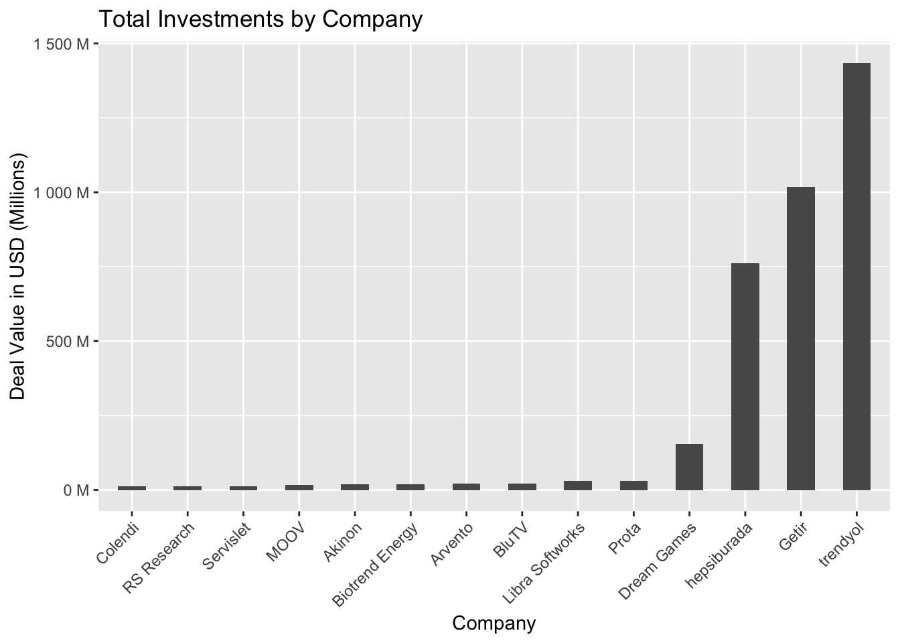

# install.packages("readxl")
# install.package(kni)
library(readxl)
library(knitr)
library(ggplot2)
library(dplyr)
library(scales)
df <- readxl::read_excel("assignment1/startup_deals_2021.xlsx")1 Assignment 1
This is the first assignment of the group projects.
First, the necessary libraries and data are imported.
The problematic characters in the column names are removed to make accessing the columns easier. Then we can get a “glimpse” of our data.
names(df) <- gsub("%", "", names(df))
names(df) <- gsub(" ", "_", names(df))
names(df) <- gsub("[()]", "", names(df))
glimpse(df)Rows: 297
Columns: 9
$ Target_Company <chr> "Abonesepeti", "Abrakadabra", "Ace Games", "Adlema…
$ Sector <chr> "SaaS", "Gaming", "Gaming", "Internet of things", …
$ Investor <chr> "Keiretsu Forum, Berkan Burla", "WePlay Ventures",…
$ Announcement_Date <chr> "June 2021", "December 2021", "April 2021", "June …
$ Financial_Investor <chr> "Yes", "Yes", "Yes", "Yes", "Yes", "Yes", "Yes", "…
$ `Investor's_Origin` <chr> "Turkey", "Turkey", "Turkey, USA", "Turkey", "Turk…
$ Stake_ <chr> "5.00%", "5.00%", "NA", "NA", "NA", "NA", "10.92%"…
$ Deal_Value_USD <chr> "100000", "250000", "NA", "120000", "100000", "100…
$ Investment_Stage <chr> "Seed Stage", "Seed Stage", "Seed Stage", "Seed St…It can be seen that the “Stake_” and “Deal_Value_USD” columns appear as strings. That’s not good for business.
Let’s start with the “Deal_Value_USD” column. suppressWarnings used to avoid the warnings for the NaN values.
df$"Deal_Value_USD"<- suppressWarnings(as.integer(df$"Deal_Value_USD"))It gets a bit cumbersome when it comes to the “Stake_” column. If we were to change it like we did for the first column, we would get NaNs for the values. We can check the values in the column to investigate this problem.
table(df["Stake_"])Stake_
0.46% 1.33% 10.00% 10.42% 10.65% 10.71 % 10.91 % 10.92% 100.00% 11.00%
1 1 12 1 1 1 1 1 12 2
11.03% 11.11 % 11.55% 12.00% 12.50% 12.61 % 14.06% 14.28% 14.29% 14.30%
1 1 1 1 4 1 1 1 2 1
14.60% 14.71 % 14.91 % 15.00% 15.38% 15.49% 15.50% 15.60% 15.79% 16.13%
1 1 1 1 1 1 1 1 1 2
1750% 18.66% 19.99% 2.00% 2.21 % 2.59% 20.00% 20.83% 22.00% 22.73%
1 1 1 2 1 1 7 1 1 1
23.50% 24.29% 25.00% 25.23% 28.00% 3.33% 3.38% 3.63% 30.00% 33.33%
1 1 2 1 1 2 1 1 1 1
35.00% 35.09% 37.50% 37.70% 4.00% 4.44% 4.75% 5.00% 5.20% 5.67%
1 1 1 1 1 1 1 10 1 1
5.81 % 5.88% 5.90% 50.00% 6.00% 6.25% 6.34% 6.51 % 6.60% 60.00%
1 2 1 3 2 1 1 1 1 4
69.82% 7.00% 7.14% 7.39% 7.50% 7.69% 75.00% 8.05% 8.08% 8.33%
1 1 1 1 1 1 1 1 1 1
8.47% 8.70% 88.89% 9.39% 9.40% 9.91 % NA
2 1 1 1 1 1 157 “%” characters and the white space in some of the cells cause problems. They are removed, and the type is changed. The warnings are suppressed again.
df$"Stake_"<- gsub("%","", df$"Stake_") %>% trimws(df$"Stake_", which = c("both")) %>% as.numeric(df$"Stake_")
glimpse(df)Rows: 297
Columns: 9
$ Target_Company <chr> "Abonesepeti", "Abrakadabra", "Ace Games", "Adlema…
$ Sector <chr> "SaaS", "Gaming", "Gaming", "Internet of things", …
$ Investor <chr> "Keiretsu Forum, Berkan Burla", "WePlay Ventures",…
$ Announcement_Date <chr> "June 2021", "December 2021", "April 2021", "June …
$ Financial_Investor <chr> "Yes", "Yes", "Yes", "Yes", "Yes", "Yes", "Yes", "…
$ `Investor's_Origin` <chr> "Turkey", "Turkey", "Turkey, USA", "Turkey", "Turk…
$ Stake_ <dbl> 5.00, 5.00, NA, NA, NA, NA, 10.92, NA, NA, 15.38, …
$ Deal_Value_USD <int> 100000, 250000, NA, 120000, 100000, 1000000, 25000…
$ Investment_Stage <chr> "Seed Stage", "Seed Stage", "Seed Stage", "Seed St…1.1 Value by Company
The amount of investment received by companies can be examined as the first analysis. To do so, we should group the data set by company name and sum the deal values.
df_grouped <- df %>%
group_by(Target_Company) %>%
summarize(Deal_Value_USD = sum(Deal_Value_USD)) %>%
arrange(desc(Deal_Value_USD))
kable(head(df_grouped, 10))| Target_Company | Deal_Value_USD |
|---|---|
| trendyol | 1435000000 |
| Getir | 1018000000 |
| hepsiburada | 761481000 |
| Dream Games | 155000050 |
| Libra Softworks | 30000000 |
| Prota | 30000000 |
| BluTV | 20800000 |
| Arvento | 20565000 |
| Akinon | 20000000 |
| Biotrend Energy | 20000000 |
We can also visualize these companies and compare them.
Visualizing so many companies will make the plot unreadable. We can just select the top 5% and feed them to our plot.
We first calculate the value for the filter, then add it to the code, and then we sort the bars according to the values. Next, we insert the elements of the plot.
qu <- quantile(df_grouped$Deal_Value_USD, probs = 0.95, na.rm = TRUE)
df_grouped %>% filter(Deal_Value_USD >= qu) %>%
ggplot(aes(x = reorder(Target_Company, +Deal_Value_USD),y = Deal_Value_USD))+
geom_col(width = 0.5) + theme(axis.text.x = element_text(angle = 45, hjust=1)) +
ggtitle("Total Investments by Company") +
xlab("Company") + ylab("Deal Value in USD (Millions)") +
scale_y_continuous(labels = label_number(suffix = " M", scale = 1e-6))